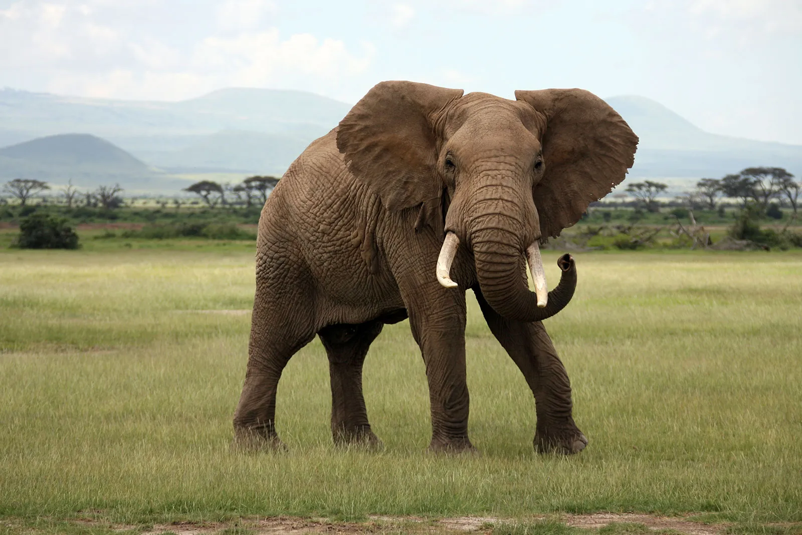
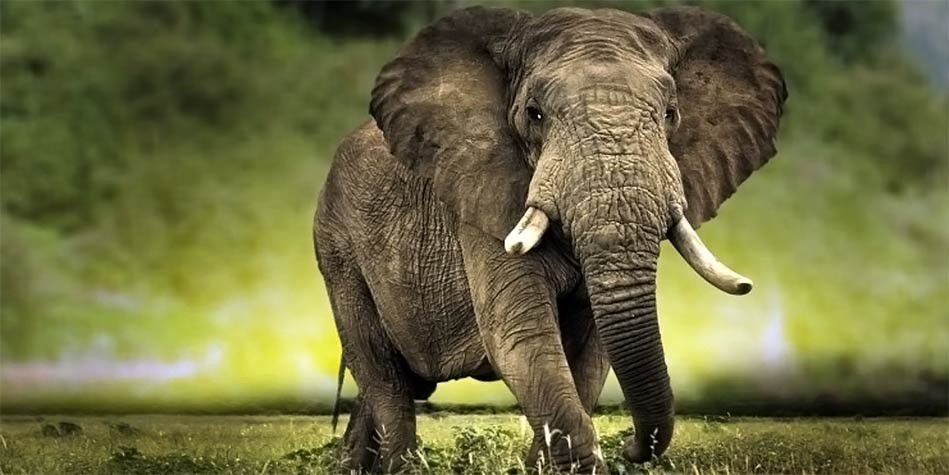
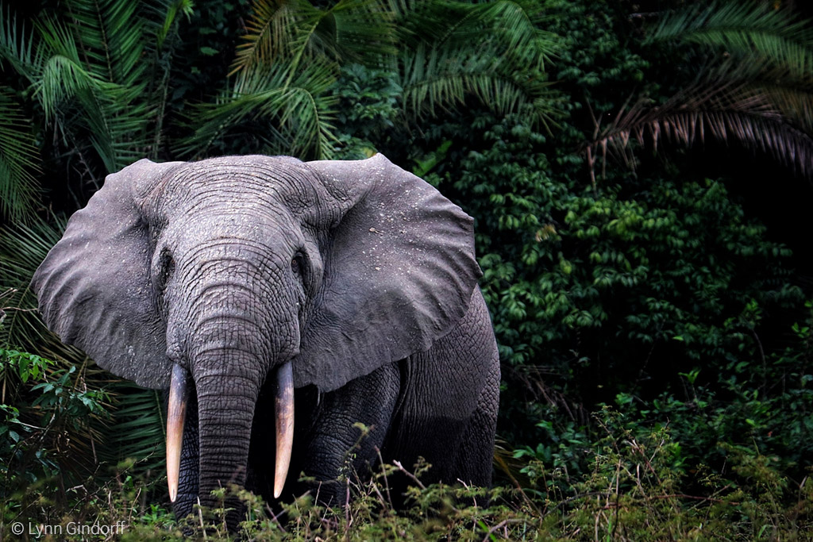
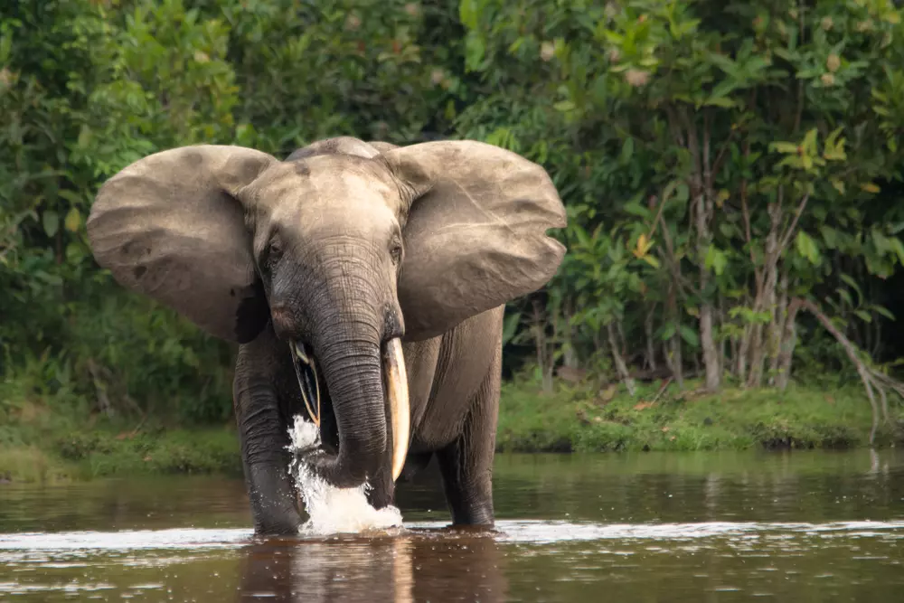
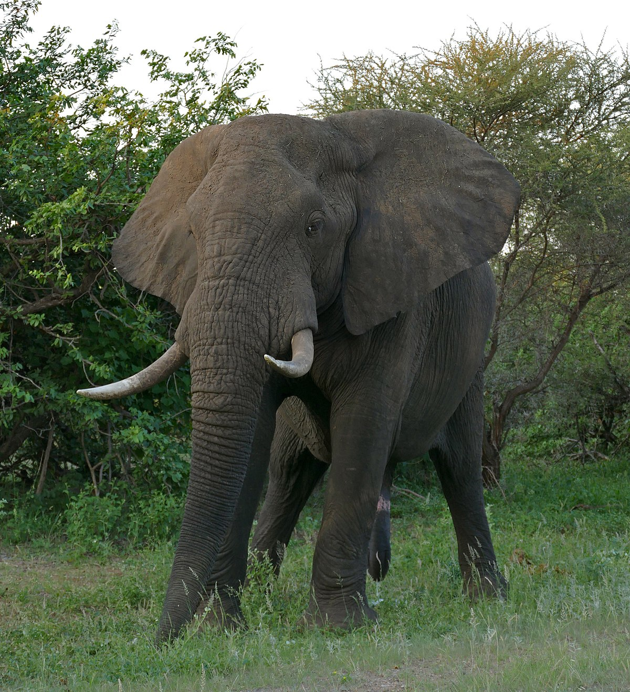
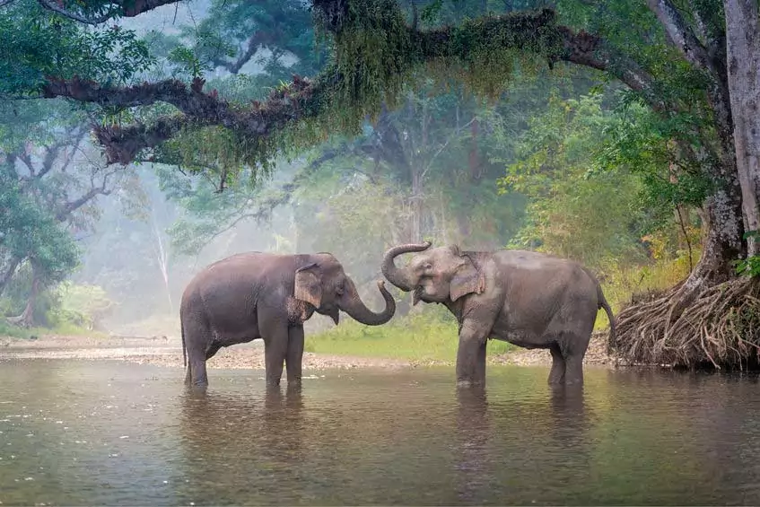
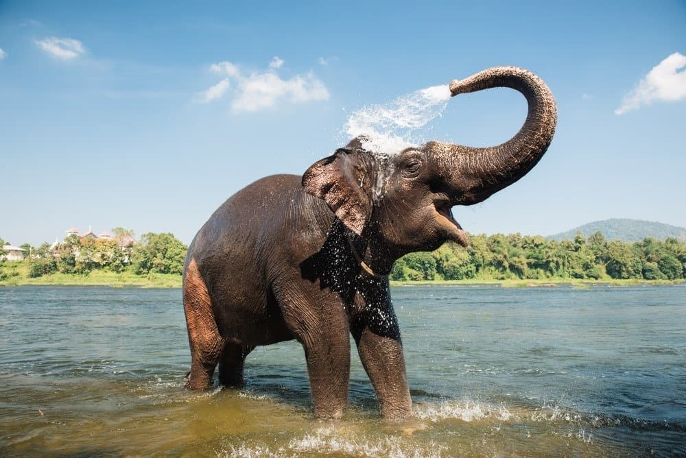
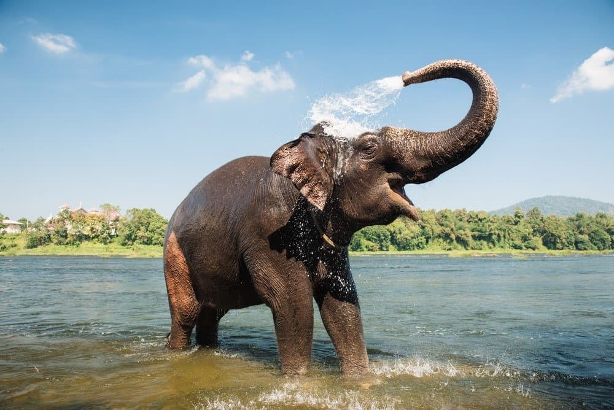

Elephants are among the most intelligent, social, and awe-inspiring creatures on Earth. As the largest land animals, they play a crucial role in their ecosystems and hold deep cultural significance across many societies. In this blog, we’ll explore the fascinating world of elephants—their behavior, habitats, conservation challenges, and why they are so important to our planet.
Types of Elephants
There are three main species of elephants:
1. African Bush Elephant (Loxodonta africana)
Size: Up to 13 feet tall (4 meters) and weighing 6,000–13,000 lbs (2,700–6,000 kg)
Habitat: Savannas, forests, and grasslands of sub-Saharan Africa
Distinct Features: Larger ears shaped like the African continent, long curved tusks


2. African Forest Elephant (Loxodonta cyclotis)
Size: Smaller than bush elephants, around 8 feet tall (2.5 meters)
Habitat: Dense rainforests of Central and West Africa
Distinct Features: Straighter tusks, more rounded ears



3. Asian Elephant (Elephas maximus)
Size: Up to 10 feet tall (3 meters) and weighing 4,400–11,000 lbs (2,000–5,000 kg)
Habitat: Forests and grasslands of India, Sri Lanka, Southeast Asia
Distinct Features: Smaller ears, only some males have long tusks

 

Why Elephants Are Incredible
1. Highly Intelligent & Emotional
Elephants have the largest brains of any land animal and exhibit complex behaviors like problem-solving, tool use, and self-awareness. They mourn their dead, showing grief by touching bones and staying near deceased herd members. They communicate through low-frequency rumbles that can travel miles!
2. Keystone Species
Elephants are "ecosystem engineers" because: They clear paths in forests, allowing smaller animals to thrive. Their dung spreads seeds, helping forests regenerate. They dig for water, creating watering holes used by other wildlife.
3. Strong Social Bonds Elephants live in matriarchal herds led by the oldest female. Females stay together for life, while males leave when mature. They show empathy, comforting distressed herd members.
Threats to Elephants
Despite their strength, elephants face serious dangers:
1. Poaching for Ivory
Thousands are killed yearly for their tusks, despite global bans. African forest elephants have declined by over 86% in 30 years due to poaching.
2. Habitat Loss
Deforestation and human expansion shrink their living spaces, leading to human-elephant conflicts.
3. Climate Change
Droughts and changing landscapes threaten their food and water sources.
How We Can Help Elephants
1. Support Conservation Efforts
Organizations like WWF, Save the Elephants, and Elephant Family work to protect them.
2. Avoid Ivory Products
Never buy ivory—it fuels illegal poaching.
3. Eco-Tourism & Responsible Travel
Visit ethical sanctuaries that prioritize elephant welfare over exploitation.
4. Spread Awareness
Share facts about elephants to inspire others to protect them!
Fun Elephant Facts
✅ Newborn elephants weigh 200–300 lbs (90–136 kg) at birth!
✅ They can smell water from miles away.
✅ An elephant’s trunk has 40,000 muscles (humans have only 600 in their entire body!).
✅ They eat up to 300 lbs (136 kg) of food daily—mostly grasses, leaves, and bark.
Final Thoughts Elephants are not just symbols of wisdom and strength—they are vital to healthy ecosystems and deserve our protection. By supporting conservation and raising awareness, we can ensure these magnificent creatures thrive for generations to come. Have you ever seen an elephant in the wild or at a sanctuary? Share your stories in the comments! #Elephants #WildlifeConservation #SaveTheElephants #Nature #EcosystemHeroes #AnimalIntelligence